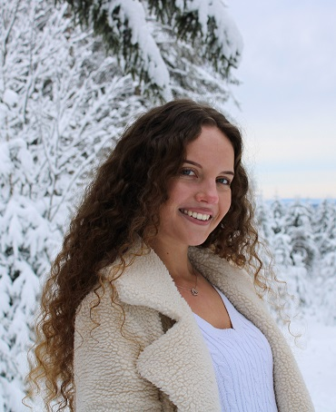

Das bin ich ...
Ich lass mal grad kurz mein Stimmchen erklingen ...
... paar Dinge über mich ...
| Nicht so meins: | Beschäftigungen: |
|---|---|
| Pilze & Rote Beete | Spritztouren mit Auto & Moped |
| Rosinen | Skifahren |
| Raffaello | Zeit mit Freunden/meiner Schwester verbringen |
Nun zu mir ...
Noch eine Kleinigkeit zu meinem Studium ...
Zurzeit bin ich Studentin an der HFU und studiere OnlineMedien im zweiten Semester. Wie es dazu kam? Vor ein paar Jahren habe ich bei SWR4 Studio Stuttgart und DASDING ein Praktikum gemacht und erste Einblicke in die verschiedensten Bereiche bekommen. Da ich schon immer irgendwas Kreatives machen wollte und mir die Zeit dort wirklich sehr gefallen hat, wollte ich mich in diesen Bereich weiterentwickeln und hab nach verschiedenen Möglichkeiten geschaut, wo ich unter anderem auf diesen breitgefächerten Studiengang gestoßen bin. Mit meiner Wahl bin ich bisher mega happy, auch wenn ich mich eher im kommunikativen und gestalterischen als im technischen Bereich sehe. Dennoch habe ich Lust immer wieder Neues dazuzulernen, nehme gerne Herausforderungen an und freue mich auf alles, was noch auf mich zukommt.